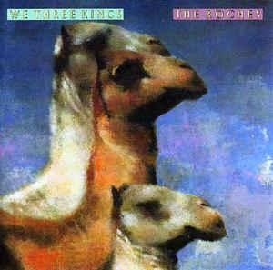

Essays:
Star of Wonder
17 Dec 2020 · 2 min read

This is a lovely little song, written by Terre Roche and recorded a cappella by The Roches for their Christmas album, We Three Kings.
If you haven’t yet heard it, then you should listen to it now.
The beauty of this song, to my mind, is the way it singles out and humanizes one character, and one experience, out of the story of Jesus’ birth.
Star of wonder in the heavens,
Wonder what you want of me.
Should I follow you tonight?
Star of wonder, star of wonder.I am just a lonely shepherd
Watching from a distant hill.
Why do you appear to me?
Star of wonder, if you will.In the morning they’ll come looking
For the shepherd on the hill.
What would make her leave her flock
For surely she must love them still?Star of Wonder in the heavens,
Are you just a shining star
Or should I follow you tonight?
Star of wonder, star of wonder,
Shining bright.
The performance matches the lyrics perfectly, delivering the song fully and completely with nothing more than three quiet, wondrous human voices.
Many holiday songs fall cleanly into either a secular or a religious camp: you can drink your egg nog or you can worship Christ. And, of course, some of the songs I favor tend to talk of Christmas from a humanistic, ethical perspective.
This song does something different. Jesus Christ is never spoken of, either directly or indirectly. The words “Christmas” and “holiday” are never used. There are no direct Christian references at all.
Instead we are asked to consider, simply, the feelings of a lonely shepherd who has the singular experience of seeing a star appear that seems to beckon to her, and ask her to follow. And that’s it.
However, by focusing so tightly on one character, and one scene, Terre Roche manages to paint a picture that includes all of us. For this is not just the story of one shepherd being called to witness the birth of Christ: it is the story of every human who has ever experienced a sense of wonder, who has felt a calling to something higher, and has paused to consider whether to follow that star, or to return to normal daily life.
Terre and her two sisters certainly felt that calling, and instilled and shared a sense of wonder for many years with listeners all 'round the world, including an audience I felt privileged to be part of in Seattle not too many years ago.
Terre Roche has kindly provided words and music to her lovely little song for those who are interested.
Next: “Christmas Time’s A-Coming”
Or see the complete list of Christmas Favorites from The Practical Utopian.